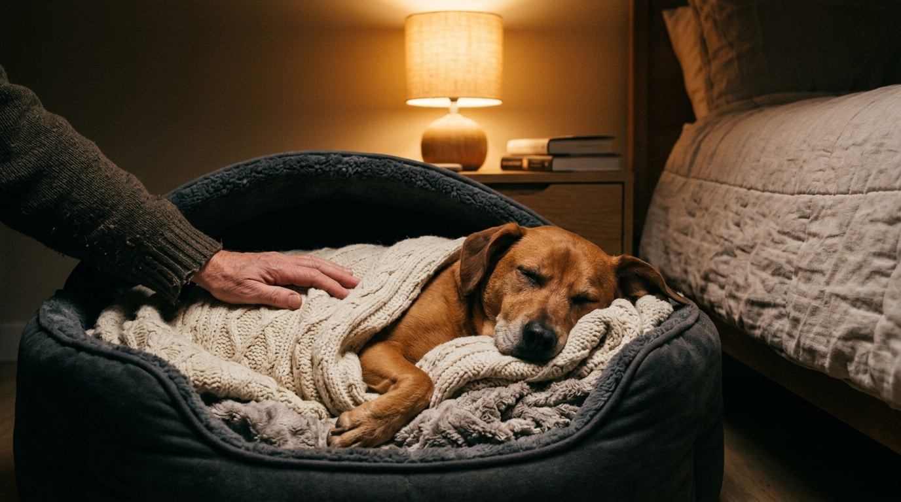

La pirotecnia y las tormentas no son un capricho o una simple molestia: activan un pánico biológico real en el cerebro canino. Aprende cómo crear un refugio seguro, qué herramientas utilizar y por qué jamás debes inmovilizarlo con fármacos aversivos.

1. El impacto del ruido en el oído canino: por qué no es capricho sino pánico real
Para entender el terror que experimenta un perro durante las detonaciones de fuegos artificiales o los truenos de tormenta, primero debemos comprender su aparato auditivo. Mientras el ser humano percibe frecuencias de hasta 20,000 Hertzios, el oído canino capta sonidos de hasta 45,000 a 65,000 Hz a distancias cuatro veces mayores. Además, los perros cuentan con más de 18 músculos en cada oreja, lo que les permite orientar el pabellón auricular de forma independiente para amplificar vibraciones sónicas.
Cuando una bomba pirotécnica estalla en el aire, para un perro no es solo un estruendo ensordecedor:
- Onda expansiva infrasónica: Provoca una vibración física que impacta en su caja torácica y en sus almohadillas plantares antes de que el sonido sea audible para las personas.
- Olor químico a pólvora y azufre: El agudo olfato canino detecta sustancias asociadas al fuego, disparando de inmediato la alarma evolutiva de huida y supervivencia.
- Imprevisibilidad: A diferencia de un sonido continuo, las detonaciones son súbitas, aperiódicas e imposibles de ubicar en el espacio para el perro, lo que desata una descarga masiva de adrenalina y cortisol en su torrente sanguíneo.
Las respuestas comunes como temblores incontrolables, jadeo excesivo, salivación espesa, intentos desesperados por escapar o esconderse en rincones oscuros son síntomas de una respuesta neurofisiológica de fobia, nunca de desobediencia o "mal comportamiento".
2. Por qué nunca debes usar sedantes tipo acepromacina (el mito de la inmovilidad)
Históricamente, uno de los errores más extendidos y dañinos ha sido suministrar gotas tranquilizantes de venta libre basadas en acepromacina (comercializadas con diversos nombres comerciales veterinarios como Acedan, Pacifor o Sedastop) para que el animal "duerma tranquilo" durante la nochebuena o año nuevo.
La farmacología moderna y la etología clínica han desmentido categóricamente este mito:
- Parálisis motora sin ansiolisis: La acepromacina es un neuroléptico bloqueador de dopamina que anula el control motor muscular, pero no reduce la ansiedad ni el miedo. El perro queda físicamente paralizado en el suelo, incapaz de moverse o vocalizar, pero su cerebro permanece plenamente lúcido.
- Hipersensibilidad sensorial: Estudios demuestran que este compuesto incrementa la agudeza auditiva del animal. Es decir, el perro escucha los estallidos con mayor intensidad mientras se siente atrapado dentro de su propio cuerpo sin poder buscar refugio ni consuelo.
- Trauma psicológico severo: Esta experiencia suele provocar que en las festividades posteriores la fobia se multiplique geométricamente, derivando en pánico crónico ante cualquier sonido metálico o trueno leve.
3. Cómo construir un refugio seguro en casa semanas antes de los festejos
El éxito en la contención del estrés depende de la preparación previa. No podemos esperar a que inicien las explosiones para improvisar una guarida. Debes crear y asociar positivamente una "Zona Segura" al menos tres a cuatro semanas antes:
- Elige el lugar con mayor aislamiento acústico: Por lo general, baños interiores sin ventanas exteriores, habitaciones interiores, vestidores o el espacio bajo una escalera ofrecen la mayor amortiguación sonora natural.
- Construye una madriguera acogedora: Si tu perro está habituado a su transportín o kennel (siempre con la puerta abierta, nunca encerrado), cúbrelo con una manta gruesa o edredón pesado para amortiguar las ondas sonoras. Si no usa transportín, coloca su cama favorita entre cojines grandes.
- Aroma familiar y seguridad: Coloca prendas de ropa tuya usadas (que tengan tu olor corporal calmante) dentro del refugio. Puedes emplear difusores de feromonas apaciguantes caninas (DAP / Adaptil) cerca de su camita con una semana de anticipación.
- Cierra persianas y corre cortinas: Esto bloquea los destellos lumínicos de la pirotecnia, reduciendo el sobresalto visual.
4. Enriquecimiento olfativo, ruido blanco y prensas de confort
Para contrarrestar el impacto ambiental, disponemos de herramientas no invasivas comprobadas que trabajan sobre el sistema nervioso parasimpático del perro:
- Enmascaramiento auditivo (Ruido Marrón o Blanco): Pon música clásica adaptada para perros (por ejemplo, piezas con ritmo cardíaco en reposo de 60 bpm en Spotify o YouTube) o activa un ventilador o extractor de aire. El ruido marrón es especialmente eficaz para cubrir los graves profundos de los estallidos.
- Lamer y masticar (Liberación de endorfinas): La acción repetitiva de lamer y masticar estimula la liberación de serotonina y calma el ritmo cardíaco. Prepara juguetes rellenables (como Kongs) congelados con comida húmeda, caldo de huesos natural o alfombras de lamer (LickiMats) con puré de calabaza antes de que comience el horario pico de detonaciones.
- Chalecos de presión constante (Thundershirt o vendaje Tellington TTouch): Ejercen una suave presión envolvente sobre el torso del perro, similar al efecto de envolver a un recién nacido. Esta estimulación táctil sostenida ayuda al sistema nervioso a regularse. Es vital habituar al perro a usarlo durante paseos y juegos días antes para que no lo asocie negativamente con el peligro.
5. Qué hacer durante la crisis: cómo acompañarlo con contención respetuosa
Existe un mito antiguo muy perjudicial que afirma: "Si acaricias a tu perro cuando tiene miedo, vas a reforzar su miedo". Desde la psicología del aprendizaje y la neurobiología, esto es falso: las emociones primarias como el pánico no se refuerzan mediante afecto. Nadie se vuelve más fóbico porque alguien de confianza le brinde consuelo y presencia.
Durante el momento cumbre del ruido, sigue estas pautas de contención consciente:
- Permítele elegir su lugar: Si prefiere meterse detrás del inodoro o bajo la cama, respétalo. No lo obligues a salir ni lo fuerces a permanecer en un lugar donde se sienta expuesto.
- Transmite serenidad corporal: Los perros leen nuestro lenguaje no verbal y tono de voz con precisión milimétrica. Háblale en un tono pausado, cálido y respira hondo. Si tú te muestras alterado o hipervigilante, el perro confirmará que existe una amenaza inminente.
- Contacto físico si él lo solicita: Si tu perro busca apego, apoya suavemente tu cuerpo contra el suyo, haz caricias lentas y largas a lo largo de su costado o pecho. Si prefiere espacio sin contacto, quédate cerca leyendo o en silencio acompañando su proceso.
- Seguridad física absoluta: Mantén puertas, balcones y portones herméticamente cerrados con cerrojo. La mayor causa de extravíos de mascotas al año ocurre en fechas festivas por perros que saltan muros o rompen mosquiteros en episodios de ceguera por pánico. Asegúrate de que porte su collar plano con placa de identificación y teléfono legible en todo momento.
Si tu compañero presenta una fobia paralizante y estás considerando buscar alternativas fuera del hogar o apoyo profesional, en nuestro Directorio Canino de Perritos Felices puedes encontrar etólogos clínicos con certificación positiva y guarderías campestres libres de jaulas ubicadas fuera de zonas urbanas densas para pasar las fiestas en total tranquilidad.
📚 Referencias Científicas y Fuentes Clínicas
- Blackwell, E. J., Bradshaw, J. W., & Casey, R. A. (2013). Fear responses to noises in domestic dogs: Prevalence, risk factors and co-occurrence with other fear-related behavior. Applied Animal Behaviour Science, 145(1-2), 15-25. DOI: 10.1016/j.applanim.2012.12.004.
- Dale, A. R., et al. (2010). A survey of owners' perceptions of fear of fireworks in a sample of companion dogs. New Zealand Veterinary Journal, 58(6), 286-291.
- American Veterinary Society of Animal Behavior — AVSAB. Position Statement on the Use of Positive Reinforcement and Management of Noise Phobias in Dogs. AVSAB Online.
¿Buscas apoyo profesional y respetuoso para tu perro?
Encuentra educadores caninos, etólogos y guarderías 100% libres de castigo en tu ciudad dentro de nuestro Directorio Canino Verificado.
EXPLORAR ESPECIALISTAS EN ETOLOGÍA ↗